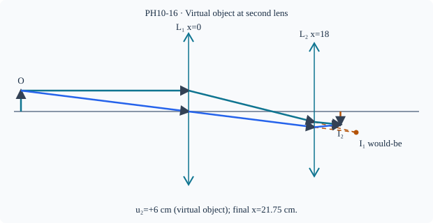

Prerequisite bridge
PH10-09
Before starting, identify the reference frame, directed rays, units and applicable geometric assumptions. Unbound prerequisites remain provisional.
Connected textbook foundation (preserved from PR #5)
15. Optical instruments as connected systems
Simple magnifiers, microscopes and telescopes use the image-making ability of lenses or mirrors. The objective and eyepiece can play different roles. For a school-level qualitative account, describe how an objective first collects light and forms an image or angular transformation, while an eyepiece makes that intermediate optical information easier to inspect.
A multi-element instrument is not one thin lens with an artificially chosen combined focal length. Full quantitative multi-lens inverse calculations are separately marked as advanced extensions until justified. Qualitative diagrams should identify which image is intermediate and which rays enter the observer's eye.
Build and check the model
EXTENSION/HOLD: For separated thin lenses, compute first conjugate, express its coordinate in the second lens's local frame, and use the sign of the second object's distance from actual incident convergence. A first would-be image beyond the second element is a virtual object for that element. The final image can be real or virtual; each lens is modeled in its own incident axis. Power addition is valid only for appropriate contact-limit lenses, not arbitrary separations.
Worked anchor
Lens 1 at x=0,f₁=+12 cm, object at −24 cm gives would-be image x=24. Lens 2 at x=18,f₂=+10 receives converging rays aimed 6 cm to its right: u₂=+6 cm. Then 1/v₂=1/10+1/6=4/15, v₂=3.75 cm, final x=21.75 cm.
Condition and limiting check
Do not use the virtual-object case as core syllabus evidence without reviewed source scope. A mirror adds a propagation-axis reversal (PH09-11).
Misconception repair
A virtual object is not necessarily a virtual image; identify whether rays are already converging toward its location.
Reasoning diagram

Self-check before transfer
First lens would focus x=30 cm; second at x=20 has f=10 cm. Find u₂,v₂,final x.
Check the reasoning
u₂=+10 cm, v₂=+5 cm, final x=25 cm.
Source and figure status
Curriculum pointer CBSE_HIGHER (comparison only); candidate scope only. Preserved chapter manuscript. Original subtopic-specific figure attached. Scientific figure and teaching-sufficiency reviews remain HOLD.